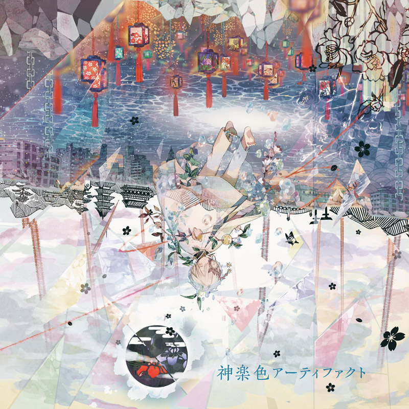
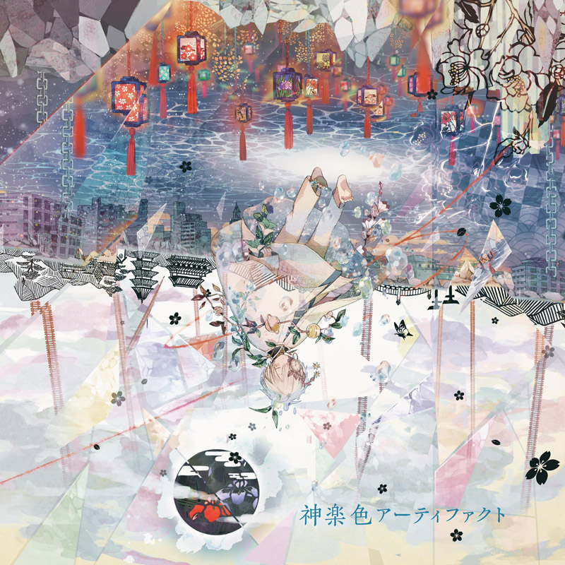

Mafumafu uploads a variety of music genres. From time to time he posts covers of songs. The same thing, goes for his original works. To listen to Mafumafu's songs and covers, they are available on Youtube and Nico Nico Douga.
One way to support an artist is by purchasing their goods, for example their albums. Mafumafu has released two albums during his ongoing career. Mafu's first offical solo album is Ashita Iro World End, the second being Kagura Iro Artifact. Below are the album covers of each album:
Album Name |
Released |
Songs |
Versions |
|---|---|---|---|
| Ashita Iro World End | October 18, 2017 | 16 | 2 |
| Kagura Iro Artifact | October 16, 2019 | 20 | 2 |
 
